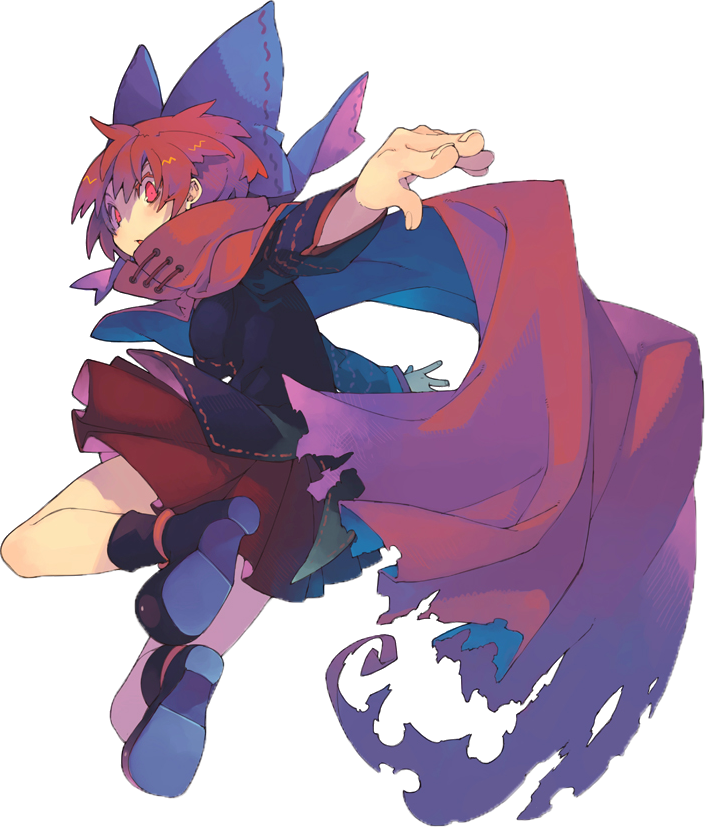

CJCU ACG研究社

ACG即Anime、Comics and Games的縮寫，「動畫」、「漫畫」、「遊戲」
為華人地區常用之次文化詞彙，特指來自日本的動漫和電子遊戲
1995年，台灣的動漫愛好者AIplus在國立中山大學山抹微雲BBS站開設新版面
使用「ACG_Review板」作為名稱以代動畫、漫畫、遊戲
乃為「ACG」一詞之始
在輕小說改編的動畫、漫畫、遊戲越來越多之際，又衍生出「ACGN」
Novels，小說。主要指輕小說（Light Novel）
現在ACG所指內容也涵蓋輕小說
因此雖有人提出使用ACGN作為該詞的演進說法
但實際上絕大多數場合仍在使用ACG
【KDF09】 舞蹈表演
社辦：學生活動中心二樓(大鏡子第一間)
社課時間：每周四晚上七點
FB：
https://www.facebook.com/groups/270865019604512
社長：三代